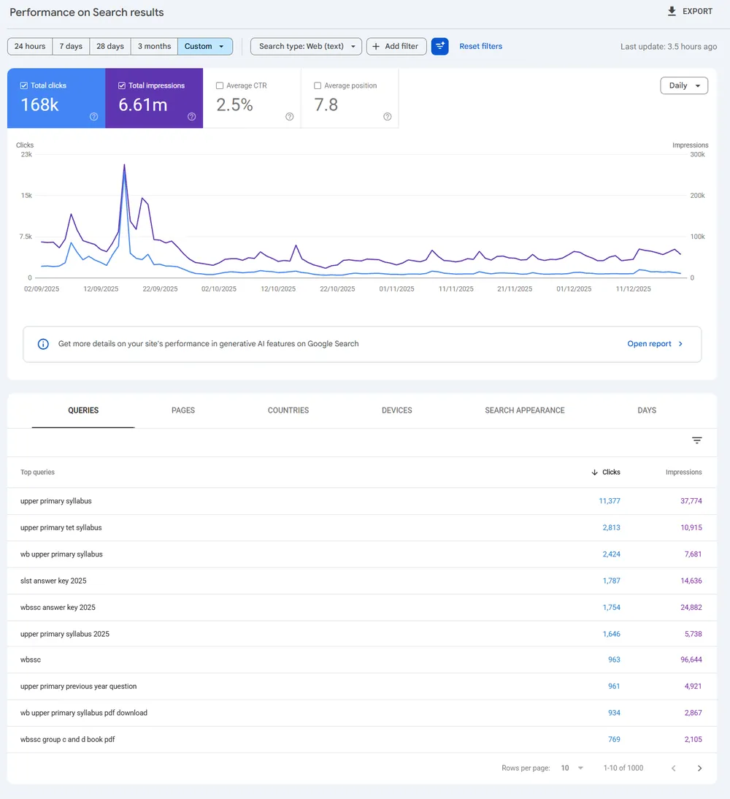
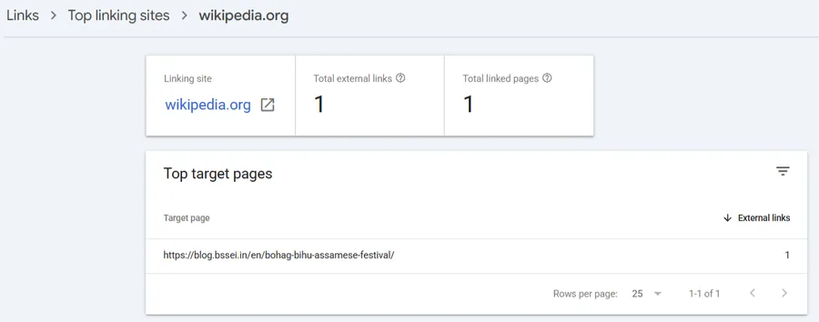
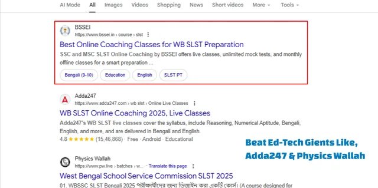
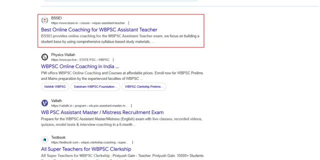
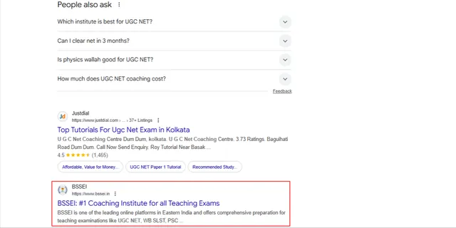
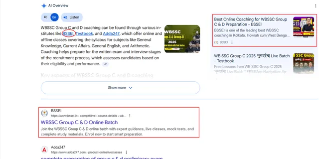
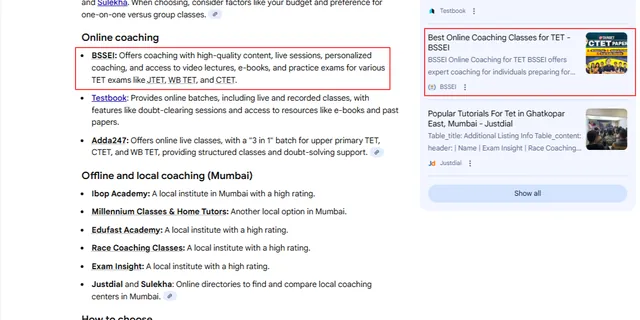
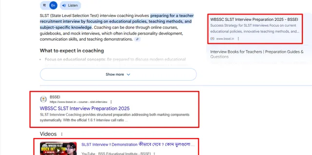
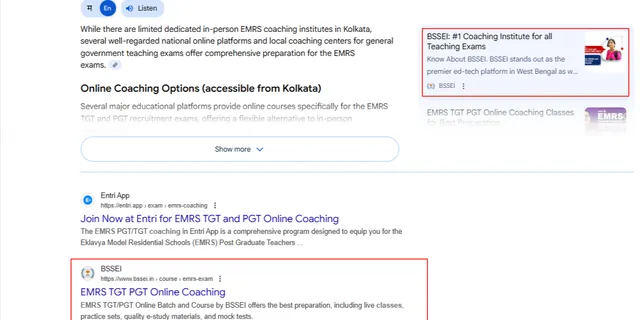

Education website: 0 to 25,000+ monthly visits
BSSEI · Education · 10 monthsProblem
A coaching institute's website, blog and sub-brand were getting no organic traffic from Google.
What I did
- Rebuilt the site architecture
- Launched a blog subdomain with a topic cluster strategy
- Created high-converting money pages
- Improved Core Web Vitals, schema, sitemaps, canonicals and redirects
Result
- 0 → 25,000+ monthly organic visits in 10 months
- Page 1 for 50+ competitive keywords, e.g. "UGC NET Coaching in Kolkata", "SLST Coaching", "WBPSC Teacher Coaching"
- Blog: 168K clicks and 6.61M impressions in Google Search, average position 7.8 (Sep – Dec 2025)
- Cited in Google AI Overviews for exam coaching searches
- Backlink from English Wikipedia: the Bihu article links to a BSSEI blog post
Proof from Google (screenshots, 2025 · click to enlarge)

















